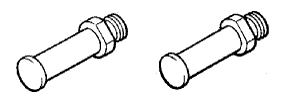

WATER PUMP > INSTALLATION > Preparation

 | 09960-10010 | Variable Pin Wrench Set |
 | (09962-01000) | Variable Pin Wrench Arm Assembly |
|  | (09963-01000) | Pin 10 |
| Item | Specified Condition | Classification |
| Engine coolant | 15.4 liters (16.3 US qts, 13.6 Imp. qts) | Use only "TOYOTA Super Long Life Coolant", or similar high quality ethylene glycol based non-silicate, non-amine, non-nitrite, and non-borate coolant with long-life hybrid organic acid technology (coolant with long-life hybrid organic acid technology is a combination of low phosphates and organic acids). |
| Heater | - |
| Paper towel | - |
| Radiator cap tester | - |
| Thermometer | - |
| Torque wrench | - |